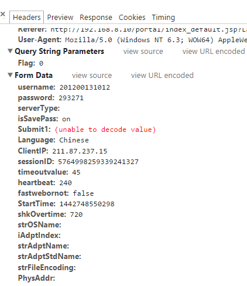

Python爬虫实战三之实现山东大学无线网络掉线自动重连
综述
最近山大软件园校区QLSC_STU无线网掉线掉的厉害，连上之后平均十分钟左右掉线一次，很是让人心烦，还能不能愉快地上自习了？能忍吗？反正我是不能忍了，嗯，自己动手，丰衣足食！写个程序解决掉它！
假若你不能连这个无线，那就照照思路啦～
决战前夕
首先我们看一下那个验证页面是咋样滴，上个图先
嘿，这界面还算可以把，需要我们输入的东西就是俩，一个就是学号，另一个是身份证号后六位，然后就可以登录，享受免费的无线网啦。
不过不知道谁设置了个登录时长，一段时间后就会掉线了，于是，自动模拟登陆系统就要应运而生啦。
来，我们先点击一下连接，看一下浏览器怎么工作的。
按下F12，监听网络，我们点击第一个响应，也就是login.jsp，看一下。

我们具体看一下headers，里面form提交了什么东西，真的是茫茫多的数据啊。

嗯，一目了然POST的数据和提交的地址。 让我们来分析几个数据吧：
- ClientIP：当前客户端的IP地址，在山大软件园校区这个地址是211.87开头的
- timeoutvalue：连接等待时间，也就是俗话说的timeout
- StartTime：登录时间，也就是在你登录的那一刻的时间戳，这个时间戳是13位的，精确到了毫秒，不过一般是10位的，我们加3个0就好了
- shkOvertime：登录持续时间，这个数据默认是720，也就是12分钟之后，登录就失效了，自动掉线，我们可以手动更改
- username：学号
- password：密码，也就是我们身份证号后六位
我们需要在登录的时候把form表单中的所有信息都POST一下，然后就可以完成登录啦。 万事俱备，只欠东风，来来来，程序写起来！
一触即发
说走咱就走啊，天上的星星参北斗啊！
登陆地址：Request URL:http://192.168.8.10/portal/login.jsp?Flag=0
首先，我们需要验证一下IP地址，先写一个获取IP地址的函数，首先判断当前IP是不是211.87开头的，如果是的话，证明连接的IP是有效的。 首先我们写一个获取本机IP的方法：
self.ip_pre = "211.87"
#获取本机无线IP
def getIP(self):
local_iP = socket.gethostbyname(socket.gethostname())
if self.ip_pre in str(local_iP):
return str(local_iP)
ip_lists = socket.gethostbyname_ex(socket.gethostname())
for ip_list in ip_lists:
if isinstance(ip_list, list):
for i in ip_list:
if self.ip_pre in str(i):
return str(i)
elif type(ip_list) is types.StringType:
if self.ip_pre in ip_list:
return ip_list
这个方法利用了gethostbyname和gethostbyname_ex方法，获取了各个网卡的IP地址，遍历一下，找到那个211.87开头的IP，返回 接下来，获取到IP之后，我们便可以构建form，然后进行模拟登陆了。
#模拟登录
def login(self):
print self.getCurrentTime(), u"正在尝试认证QLSC_STU无线网络"
ip = self.getIP()
data = {
"username": self.username,
"password": self.password,
"serverType": "",
"isSavePass": "on",
"Submit1": "",
"Language": "Chinese",
"ClientIP": self.getIP(),
"timeoutvalue": 45,
"heartbeat": 240,
"fastwebornot": False,
"StartTime": self.getNowTime(),
#持续时间，超过这个时间自动掉线，可进行设置
"shkOvertime": self.overtime,
"strOSName": "",
"iAdptIndex": "",
"strAdptName": "",
"strAdptStdName": "",
"strFileEncoding": "",
"PhysAddr": "",
"bDHCPEnabled": "",
"strIPAddrArray": "",
"strMaskArray": "",
"strMask": "",
"iDHCPDelayTime": "",
"iDHCPTryTimes": "",
"strOldPrivateIP": self.getIP(),
"strOldPublicIP": self.getIP(),
"strPrivateIP": self.getIP(),
"PublicIP": self.getIP(),
"iIPCONFIG":0,
"sHttpPrefix": "http://192.168.8.10",
"title": "CAMS Portal"
}
#消息头
headers = {
'User-Agent' : 'Mozilla/5.0 (Windows NT 6.3; WOW64) AppleWebKit/537.36 (KHTML, like Gecko) Chrome/38.0.2125.111 Safari/537.36',
'Host': '192.168.8.10',
'Origin': 'http://192.168.8.10',
'Referer': 'http://192.168.8.10/portal/index_default.jsp?Language=Chinese'
}
post_data = urllib.urlencode(data)
login_url = "http://192.168.8.10/portal/login.jsp?Flag=0"
request = urllib2.Request(login_url, post_data, headers)
response = urllib2.urlopen(request)
result = response.read().decode('gbk')
比较多的内容就在于form表单的数据内容以及请求头，后来利用urllib2的urlopen方法实现模拟登陆。
如果大家对此不熟悉，可以参见
Urllib的基本使用
这样，登录后的结果就会保存在result变量中，我们只需要从result中提取出我们需要的数据就可以了。
乘胜追击
接下来，我们就分析一下数据啦，结果有这么几种：
- 1.登录成功
- 2.已经登录
- 3.用户不存在
- 4.密码错误
- 5.未知错误
好，利用result分析一下结果
#打印登录结果
def getLoginResult(self, result):
if u"用户上线成功" in result:
print self.getCurrentTime(),u"用户上线成功,在线时长为",self.overtime/60,"分钟"
elif u"您已经建立了连接" in result:
print self.getCurrentTime(),u"您已经建立了连接,无需重复登陆"
elif u"用户不存在" in result:
print self.getCurrentTime(),u"用户不存在，请检查学号是否正确"
elif u"用户密码错误" in result:
pattern = re.compile('<td class="tWhite">.*?2553:(.*?)</b>.*?</td>', re.S)
res = re.search(pattern, result)
if res:
print self.getCurrentTime(),res.group(1),u"请重新修改密码"
else:
print self.getCurrentTime(),u"未知错误，请检查学号密码是否正确"
通过字符串匹配和正则表达式，我们分辨并提取出了上述五种情况。
增加循环检测 既然是检测网络是否断开，那么我们只需要每隔一段时间检测一下就好了，那就10秒吧。
因为这个10秒是可配置的，为了方便配置，统一配置到init方法里面。
#检测间隔时间，单位为秒
self.every = 10
然后，我们写一个循环来检测一下
while True:
nowIP = self.getIP()
if not nowIP:
print self.getCurrentTime(), u"请检查是否正常连接QLSC_STU无线网络"
else:
print self.getCurrentTime(),u"成功连接了QLSC_STU网络,本机IP为",nowIP
self.login()
while True:
can_connect = self.canConnect()
if not can_connect:
nowIP = self.getIP()
if not nowIP:
print self.getCurrentTime(), u"当前已经断线，请确保连接上了QLSC_STU网络"
else:
print self.getCurrentTime(), u"当前已经断线，正在尝试重新连接"
self.login()
else:
print self.getCurrentTime(), u"当前网络连接正常"
time.sleep(self.every)
time.sleep(self.every)
其中我们用到了canConnect方法，这个就是检测网络是否已经断开的方法，我们可以利用ping百度的方法来检测一下。
方法实现如下
#判断当前是否可以联网
def canConnect(self):
fnull = open(os.devnull, 'w')
result = subprocess.call('ping www.baidu.com', shell = True, stdout = fnull, stderr = fnull)
fnull.close()
if result:
return False
else:
return True
好啦，所有的要点我们已经逐一击破，等着凯旋吧
收拾战场
好了，所有的代码要点已经被我们攻破了，接下来就整理一下，让他们组合起来，变成一个应用程序吧。
__author__ = 'CQC'
#-*- coding:utf-8 -*-
import urllib
import urllib2
import socket
import types
import time
import re
import os
import subprocess
class Login:
#初始化
def __init__(self):
#学号密码
self.username = '201200131012'
self.password = 'XXXXXX'
#山大无线STU的IP网段
self.ip_pre = '211.87'
#登录时长
self.overtime = 720
#检测间隔时间，单位为秒
self.every = 10
#模拟登录
def login(self):
print self.getCurrentTime(), u"正在尝试认证QLSC_STU无线网络"
ip = self.getIP()
data = {
"username": self.username,
"password": self.password,
"serverType": "",
"isSavePass": "on",
"Submit1": "",
"Language": "Chinese",
"ClientIP": self.getIP(),
"timeoutvalue": 45,
"heartbeat": 240,
"fastwebornot": False,
"StartTime": self.getNowTime(),
#持续时间，超过这个时间自动掉线，可进行设置
"shkOvertime": self.overtime,
"strOSName": "",
"iAdptIndex": "",
"strAdptName": "",
"strAdptStdName": "",
"strFileEncoding": "",
"PhysAddr": "",
"bDHCPEnabled": "",
"strIPAddrArray": "",
"strMaskArray": "",
"strMask": "",
"iDHCPDelayTime": "",
"iDHCPTryTimes": "",
"strOldPrivateIP": self.getIP(),
"strOldPublicIP": self.getIP(),
"strPrivateIP": self.getIP(),
"PublicIP": self.getIP(),
"iIPCONFIG":0,
"sHttpPrefix": "http://192.168.8.10",
"title": "CAMS Portal"
}
#消息头
headers = {
'User-Agent' : 'Mozilla/5.0 (Windows NT 6.3; WOW64) AppleWebKit/537.36 (KHTML, like Gecko) Chrome/38.0.2125.111 Safari/537.36',
'Host': '192.168.8.10',
'Origin': 'http://192.168.8.10',
'Referer': 'http://192.168.8.10/portal/index_default.jsp?Language=Chinese'
}
post_data = urllib.urlencode(data)
login_url = "http://192.168.8.10/portal/login.jsp?Flag=0"
request = urllib2.Request(login_url, post_data, headers)
response = urllib2.urlopen(request)
result = response.read().decode('gbk')
self.getLoginResult(result)
#打印登录结果
def getLoginResult(self, result):
if u"用户上线成功" in result:
print self.getCurrentTime(),u"用户上线成功,在线时长为",self.overtime/60,"分钟"
elif u"您已经建立了连接" in result:
print self.getCurrentTime(),u"您已经建立了连接,无需重复登陆"
elif u"用户不存在" in result:
print self.getCurrentTime(),u"用户不存在，请检查学号是否正确"
elif u"用户密码错误" in result:
pattern = re.compile('<td class="tWhite">.*?2553:(.*?)</b>.*?</td>', re.S)
res = re.search(pattern, result)
if res:
print self.getCurrentTime(),res.group(1),u"请重新修改密码"
else:
print self.getCurrentTime(),u"未知错误，请检查学号密码是否正确"
#获取当前时间戳，13位
def getNowTime(self):
return str(int(time.time()))+"000"
#获取本机无线IP
def getIP(self):
local_iP = socket.gethostbyname(socket.gethostname())
if self.ip_pre in str(local_iP):
return str(local_iP)
ip_lists = socket.gethostbyname_ex(socket.gethostname())
for ip_list in ip_lists:
if isinstance(ip_list, list):
for i in ip_list:
if self.ip_pre in str(i):
return str(i)
elif type(ip_list) is types.StringType:
if self.ip_pre in ip_list:
return ip_list
#判断当前是否可以联网
def canConnect(self):
fnull = open(os.devnull, 'w')
result = subprocess.call('ping www.baidu.com', shell = True, stdout = fnull, stderr = fnull)
fnull.close()
if result:
return False
else:
return True
#获取当前时间
def getCurrentTime(self):
return time.strftime('[%Y-%m-%d %H:%M:%S]',time.localtime(time.time()))
#主函数
def main(self):
print self.getCurrentTime(), u"您好，欢迎使用模拟登陆系统"
while True:
nowIP = self.getIP()
if not nowIP:
print self.getCurrentTime(), u"请检查是否正常连接QLSC_STU无线网络"
else:
print self.getCurrentTime(),u"成功连接了QLSC_STU网络,本机IP为",nowIP
self.login()
while True:
can_connect = self.canConnect()
if not can_connect:
nowIP = self.getIP()
if not nowIP:
print self.getCurrentTime(), u"当前已经掉线，请确保连接上了QLSC_STU网络"
else:
print self.getCurrentTime(), u"当前已经掉线，正在尝试重新连接"
self.login()
else:
print self.getCurrentTime(), u"当前网络连接正常"
time.sleep(self.every)
time.sleep(self.every)
login = Login()
login.main()
来，我们来运行一下，看下效果吧！ 执行
python login.py
当前是可以联网的，我分别在网页上操作执行了断开，操作，程序自动检测到掉线，自动重新连接。
接下来我直接断开了QLSC_STU网络的链接，程序同样检测到QLSC_STU这个热点没有连接上，提示用户链接。
接下来我重新连接上了这个热点，由于刚才已经登录上线，且持续时间较短，网络自动恢复正常。
下面是运行结果：

嗯，这样我们就是实现了自动掉线的检测和模拟登录。
凯旋而归
咿呀伊尔哟，想约妹子上自习吗？那就赶紧来试试吧！一网在手，天下我有！追男神女神都不再是梦想！
如果有问题，欢迎留言讨论，代码肯定有不完善的地方，仅供参考。